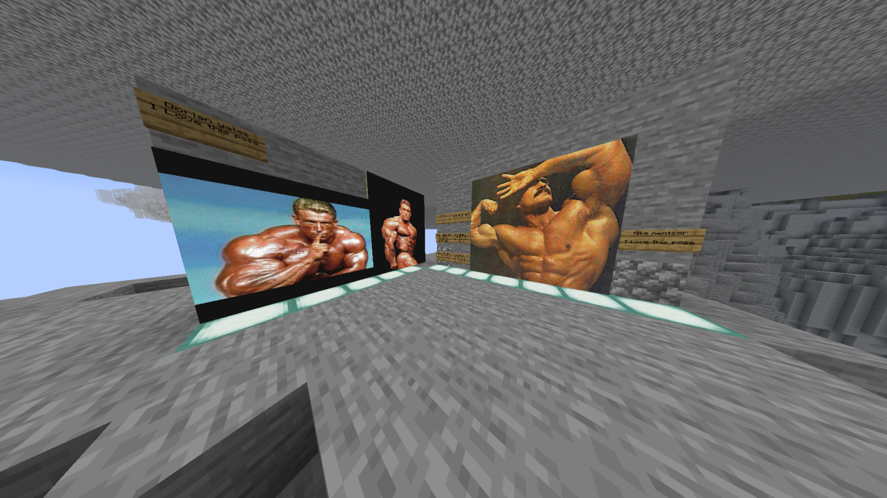

LzPvPへの愛を叫ぶ特設ページ
いちファンが勝手に語る、このサーバーの最高なところ
Proランク、いただきました！
正式リリース、本当におめでとうございます！これまでの頑張りが認められ、Proランクをいただくことができました。 この恩は一生忘れません。これからもサーバーのさらなる発展のため、微力ながら一生ついていきます！忠誠を誓います！

1.21という最先端の環境
古いバージョンで固まりがちなPvP界隈において、1.21の要素を取り入れて開発されてるのが本当にアツい！
運営陣の熱量と技術力
Kitのバランス調整や、アリーナの構築など、細かいところまでこだわりを感じます。